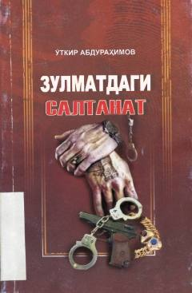

ZSSho'ro davri jinoyat olami va bir yigitning ayanchli qismati haqidagi detektiv qissa.
Mazkur asar sobiq sho'ro davridagi yashirin jinoyat olami va uning murakkab tuzilishi haqida hikoya qiladi. Asar bosh qahramoni bo'lgan halol va mehnatkash yigitning tasodifan jinoyatchilar dunyosiga kirib qolishi hamda u yerda yetakchilardan biriga aylanishi qismati tasvirlangan.